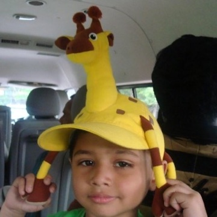

HB · 2
0
5
10
15
20
25
30
35
40
45
50
BUILDING
interfaces
FOR AI

kanpur
doon
san diego
berkeley!
if found, please contact
keshav_tiwari@berkeley.edu
THIS DIARY BELONGS TO
Keshav Tiwari
hi!
←
cover
→
what is keshav up to right now?
ASK ME →
ASK ME ANYTHING ABOUT KESHAV
×
Your question
ASK →
stick this on the page
Closed
Sound on
Theme: auto
Tabs: ink
Close